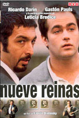

Peliculas populares
El robo del siglo (2020)

Nueve reinas (2000)

Esperando la carroza (1985)

Relatos salvajes (2014)

El secreto de sus ojos (2009)

Lo mas visto en peliculas
Star Wars: Episodio VI (1983)

Hustle (2022)

El señor de los anillos 2 (2002)

Top gun: Maverick (2022)

Joker (2019)

Peliculas mas valoradas
Star Wars: Episodio I (1999)

Pulp fiction (1994)

El padrino (1972)

La naranja mecanica (1971)

Titanic (1997)